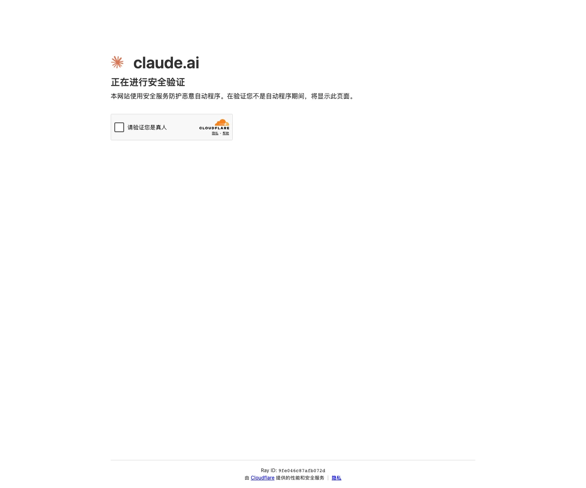

Claude 主题
Claude 的 Design.md 主题展示，围绕AI、媒体内容、暖色调、极简清爽组织页面。
Anthropic's AI assistant. Warm terracotta accent, clean editorial layout.
AI媒体内容暖色调极简清爽编辑/机构SaaS 产品开发工具浅色界面B2B 产品效率工具专业工具

来源
- 来源
- getdesign.md
- 镜像
- github:VoltAgent/awesome-design-md
- 网站
- https://claude.ai/
- 详情
- https://getdesign.md/claude/design-md
色板
#181715: #181715#cc785c: #cc785c#a9583e: #a9583e#141413: #141413#e6dfd8: #e6dfd8#3d3d3a: #3d3d3a#252523: #252523#6c6a64: #6c6a64#8e8b82: #8e8b82#ebe6df: #ebe6df#faf9f5: #faf9f5#f5f0e8: #f5f0e8
字体
display: Copernicusbody: StyreneBmono: JetBrains Monohints: Copernicus,StyreneB,JetBrains Mono,Tiempos Headline,Inter,ui-monospace,Roboto
圆角
control: 8pxcard: 16pxpreview: 16pxpill: 9999pxsource: design-md
间距
xxs: 4pxxs: 8pxsm: 12pxmd: 16pxlg: 24pxxl: 32pxxxl: 48pxsection: 96pxsource: design-md
使用建议
建议
- 建议：Anchor every page on the cream canvas. Pure white reads as "any other AI tool"; the warm tint is the brand differentiator。
- 建议：Use Copernicus serif for every display headline. Pair with StyreneB sans body. Negative letter-spacing on display sizes is non-negotiable。
- 建议：Reserve {colors.primary} (coral) for primary CTAs and full-bleed {component.callout-card-coral} moments. Don't paint accent moments coral elsewhere。
- 建议：Use {component.product-mockup-card-dark} and {component.code-window-card} to show actual Claude product chrome. Don't paint marketing illustrations of code when you can show real code。
- 建议：Pair {component.feature-card} (cream) with {component.product-mockup-card-dark} (navy) in alternating bands. The cream-to-dark rhythm is the brand's pacing mechanism。
避免
- 避免：use cool grays or pure white for canvas. Cream is the brand。
- 避免：bold serif display weight. Copernicus at 700 reads as bombastic; the system stays at 400。
- 避免：use cool blue or saturated cyan as a brand accent. The coral is the brand voltage。
- 避免：put coral everywhere. The coral is scarce on individual elements and generous only on full-bleed coral callout cards。
- 避免：use Inter for display headlines. The serif character is the brand voice。
查看 DESIGN.md